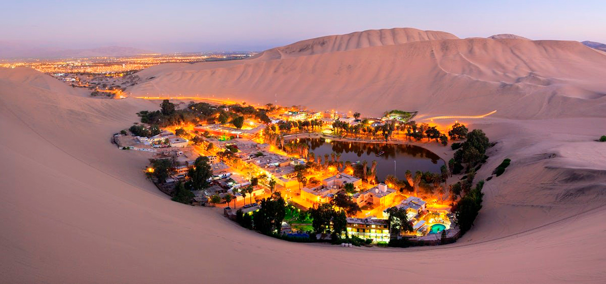
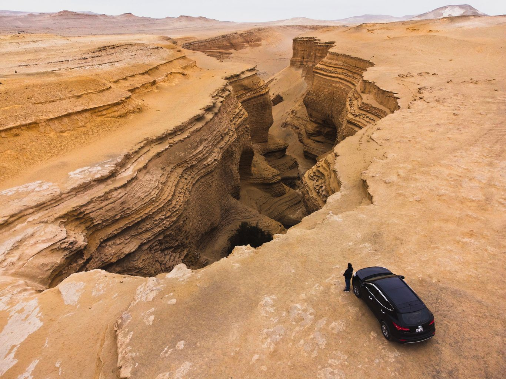

Huacachina es un oasis desértico y una pequeña villa justo al oeste de la ciudad de Ica, en el suroeste de Perú. En su centro están las aguas verdes de la laguna de Huacachina, la cual se cree que tiene propiedades terapéuticas y está rodeada de palmas. Las orillas de la laguna tienen bares y clubes. Los buggies recorren las altas dunas onduladas que rodean la villa.

El cañón de los Perdidos está ubicado al sudoeste del distrito de Santiago, en el sector denominado Montegrande, provincia de Ica, departamento de Ica, Perú. Tiene una extensión de 5 km y se encuentra a 40 km de la localidad de Ocucaje. Fue descubierto en el 2011

Paracas es una ciudad de la costa oeste de Perú. Es conocida por sus playas, como El Chaco, ubicada en la bahía resguardada de Paracas. La ciudad es un punto de partida hacia las islas Ballestas deshabitadas, hogar de lobos marinos, pelícanos y pingüinos de Humboldt. La escabrosa Reserva Nacional de Paracas tiene abundante fauna y se extiende por desierto, océano, islas y la península de Paracas. El enorme geoglifo prehistórico del Candelabro de Paracas en la península está grabado en la ladera de una colina.